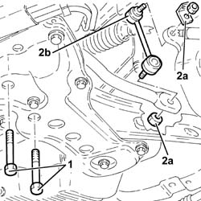

4410C12 front suspension anti roll barjoint(end)(one), lh or rh - r r
- Path
- Procedures > 44 SUSPENSION AND WHEELS > 4410 FRONT SUSPENSION > 4410C stabilizer bar and anchorage struts > 4410C12 front suspension anti roll barjoint(end)(one), lh or rh - r r
- Kind
- repair procedure (removal / refitting; the operation number is the code)
- Applies to
- all engines; all production periods
- Interactive page
- https://sloeber94.github.io/elrnDB-a156/en/#/3238190
Applies to: all engines; all production periods
 Removing
Removing
 Refitting
RefittingPlace the vehicle on the elevator bridge.
1. Place the vehicle on the elevator bridge.
1. Unscrew the screws of the stabilizing bar to the sleeper of the front suspension.
2. Unscrew the nuts (2a) and remove the articulated joint stabilizing bar front suspension (2b).

Applies to: all engines; all production periods
Refitting
RemovingInstall the articulated joint stabilizing bar front suspension and secure it with the proper nuts to the torque.
 | Fastening | Component | Ø | Value (daNm) |
|---|---|---|---|---|
- | Nut | FRONT ANTI-ROLL BAR JOINTS | M10 | 3.8 ÷ 4.7 |
Tighten the screws of the stabilizing bar to the sleeper of the front suspension to the torque.
| Fastening | Component | Ø | Value (daNm) |
|---|---|---|---|---|
- | Bolt | FRONT ANTI-ROLL BAR | M8 | 2.6 - 3.2 |
Remove the vehicle from the elevator bridge.